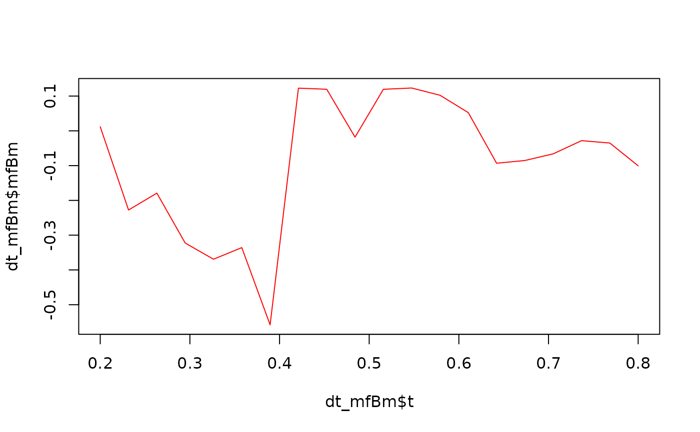
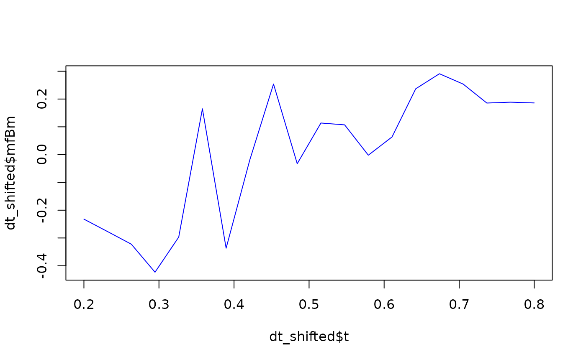

This function generates a sample path of a multifractional Brownian motion (mfBm) based on the provided Hurst function and other parameters.
Usage
simulate_mfBm(
t = seq(0.2, 0.8, len = 50),
hurst_fun = hurst_logistic,
L = 1,
intercept_var = 0,
tied = TRUE,
...
)Arguments
- t
vector (float). Grid of points between 0 and 1 where the sample path will be generated.- hurst_fun
function. Hurst function. It can behurst_arctan,hurst_linear,hurst_logistic, or any custom Hurst function.- L
float (positive). Hölder constant.- intercept_var
float (non-negative). Variance of a per-curve random intercept added to the sample path, expressed relative to the scale of the process, so that the intercept has varianceL * intercept_var. It displaces the path on the ordinate axis without changing its local regularity. Default isintercept_var = 0, which adds no intercept. Ignored whentied = TRUE. See the Details section.- tied
boolean. IfTRUE, the sample path is tied down.- ...
Additional arguments for the Hurst function.
Value
A data.table containing 2 columns: t and mfBm, representing the grid points and the
corresponding values of the mfBm sample path.
Details
Let \(\xi\) denote the standardised mfBm with Hurst function hurst_fun, that is the centred Gaussian
process with covariance .covariance_mfBm. Its variance is \(Var(\xi(t)) = t^{2 H_t}\), so that
\(Var(\xi(1)) = 1\). The returned sample path is \(\sqrt{L} \, \xi(t)\) when intercept_var = 0 and
tied = FALSE.
intercept_var adds a per-curve random intercept: the returned path becomes
\(\sqrt{L} \, (\xi(t) + Z)\), where \(Z\) is a centred Gaussian variable of variance intercept_var,
drawn independently of \(\xi\) and constant in t. The intercept \(\sqrt{L} Z\) therefore has variance
L * intercept_var, and sqrt(intercept_var) is its standard deviation as a fraction of the standard
deviation of the process at \(t = 1\).
Being constant in t, the intercept cancels in the increments \(\xi(t + \delta) - \xi(t)\). It leaves the
local Hölder exponent \(H_t\) and the local Hölder constant \(L_t\) unchanged, and only displaces the sample
path on the ordinate axis. This is useful because \(Var(\xi(t))\) vanishes as \(t \to 0\), so without it every
sample path leaves the origin at the same point.
A non-zero intercept is incompatible with a tied-down path and is ignored, with a warning, when tied = TRUE:
the tie-down subtracts \(t \sqrt{L} (\xi(1) + Z)\), which turns the constant intercept into the random ramp
\(\sqrt{L} Z (1 - t)\), leaving a path that is neither tied down at the origin nor an intercept-shifted mfBm.
Examples
t0 <- seq(0.2, 0.8, len = 20)
dt_mfBm <- simulate_mfBm(t = t0, hurst_fun = hurst_logistic, L = 1, tied = TRUE)
plot(x = dt_mfBm$t, y = dt_mfBm$mfBm, type = "l", col = "red")

# A free path with a random intercept: the paths no longer share their origin.
dt_shifted <- simulate_mfBm(t = t0, hurst_fun = hurst_logistic, L = 1,
intercept_var = 0.05, tied = FALSE)
plot(x = dt_shifted$t, y = dt_shifted$mfBm, type = "l", col = "blue")
